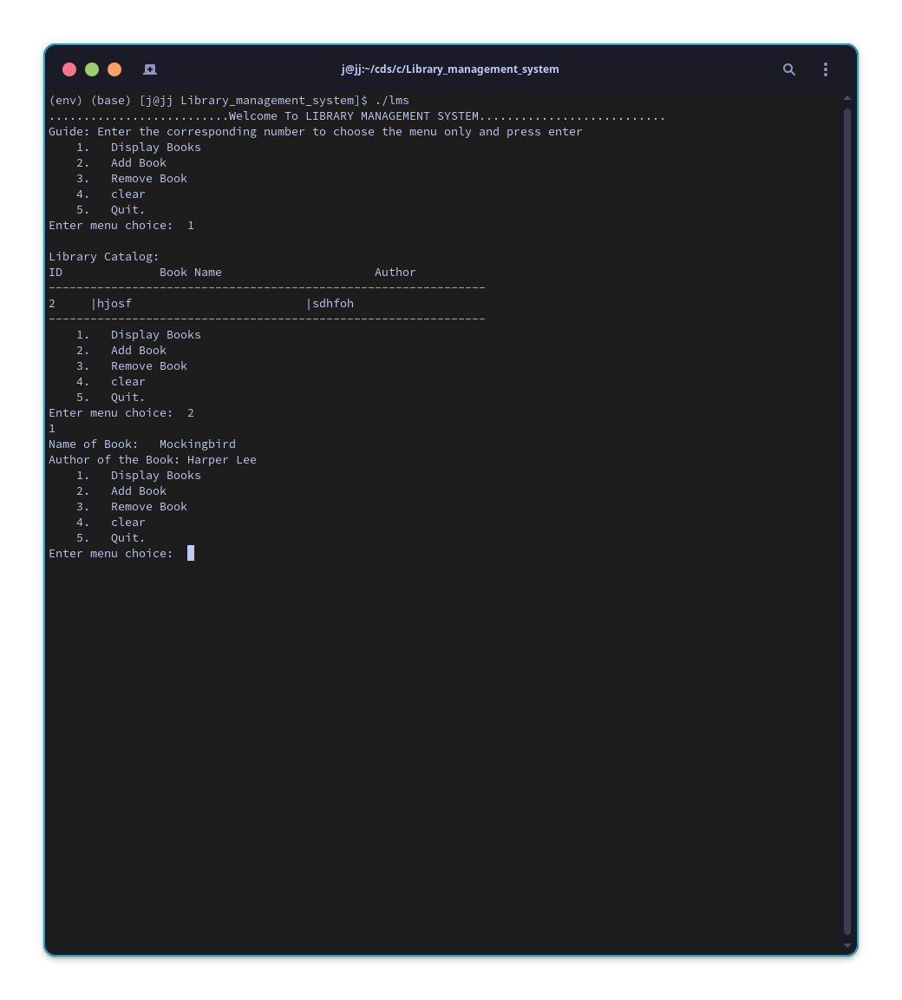
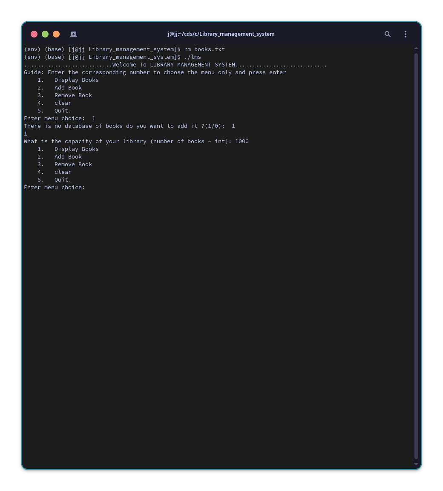
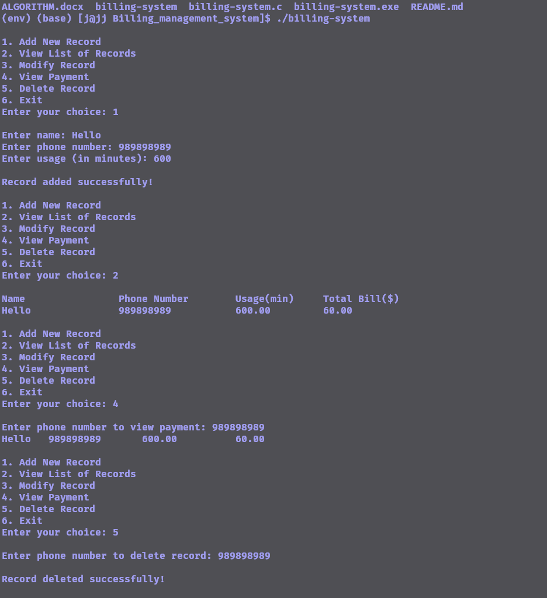
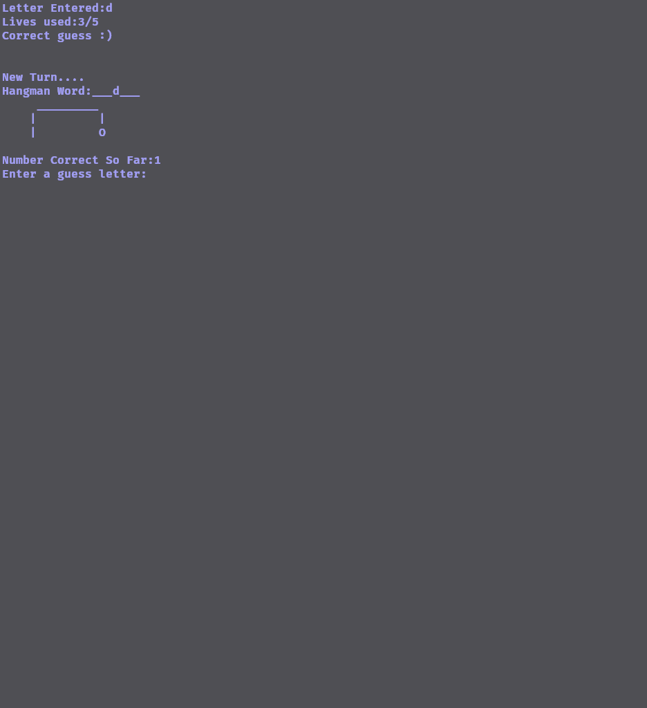
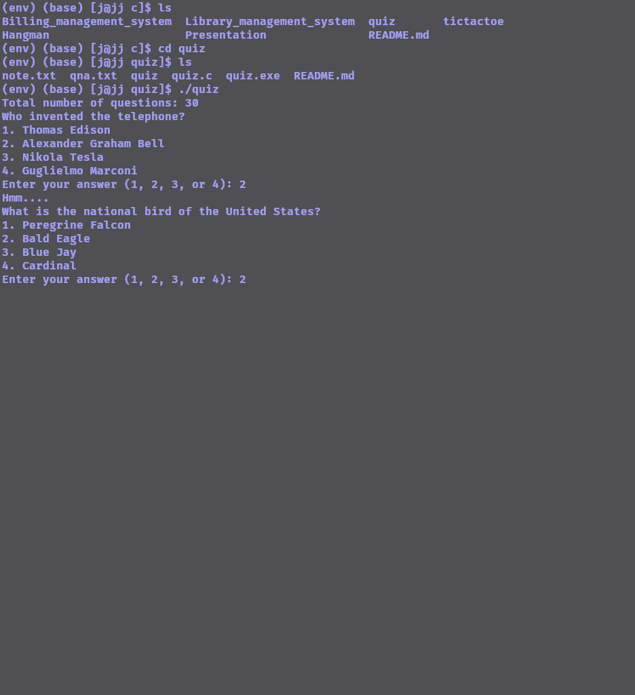
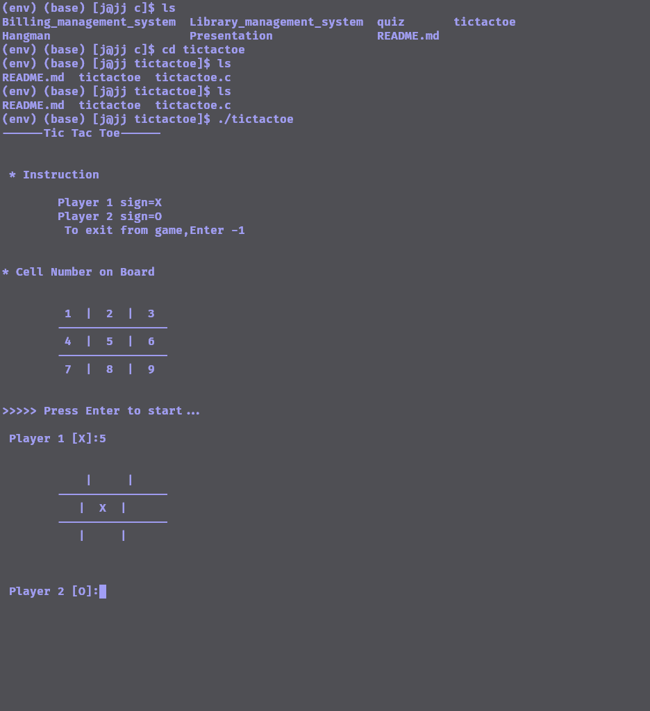

-open books in read mode


addRecord Function)customers array.viewRecords Function)customers array and prints each customer's information.modifyRecord Function)viewPayment Function)deleteRecord Function)displayMenu and main Functions)
stdio.h, stdlib.h, string.h, ctype.h, time.h).drawHangman and strlwr.main function:
choice for user input to play again. - guessWords array containing words for the game. - randomIndex to randomly select a word index. - numLives for tracking remaining lives. - numCorrect for counting correct guesses. - oldCorrect to compare with numCorrect for wrong guesses. - lengthOfWord for the length of the selected word. - letterGuessed array to track guessed letters. - quit to determine if the user quit early. - loopIndex for iterating over the word. - reguessed to check if a letter has been guessed before. - guess array to store user input. - letterEntered to store the guessed letter.Start a do-while loop to allow multiple game plays.
srand(time(NULL)).randomIndex) from guessWords.numLives, numCorrect, oldCorrect, etc.).Start a while loop for each turn of the game until the word is guessed or lives run out.
Display the current state of the word with underscores for unguessed letters.
Display the hangman figure based on the number of incorrect guesses.
Prompt the player for a letter guess.
Convert the guess to lowercase using the strlwr function.
Check if the player wants to quit (strncmp(guess, "quit", 4)).
Clear the console screen (system("clear") or system("cls")).
Process the user's guess:
Check if the letter has already been guessed.
Update the game state based on the guess.
Check if the player has won or lost.
If the player wants to quit, exit the loop.
Display the game result (win, lose, or quit).
printf("\nDo you want to Play Again?(Y/N)\n")).choice variable.while (choice == 'Y' || choice == 'y')).drawHangman function to display the hangman figure based on the number of lives.strlwr function to convert a string to lowercase.main function.

board to represent the Tic Tac Toe board.initializeBoard function to initialize the board with empty spaces and display cell numbers.main) to set up the game, display instructions, and start the game loop.initializeBoard Functionboard array with empty spaces.showBoard FunctionupdateBoard FunctioncheckWinner FunctionplayTicTacToe Function